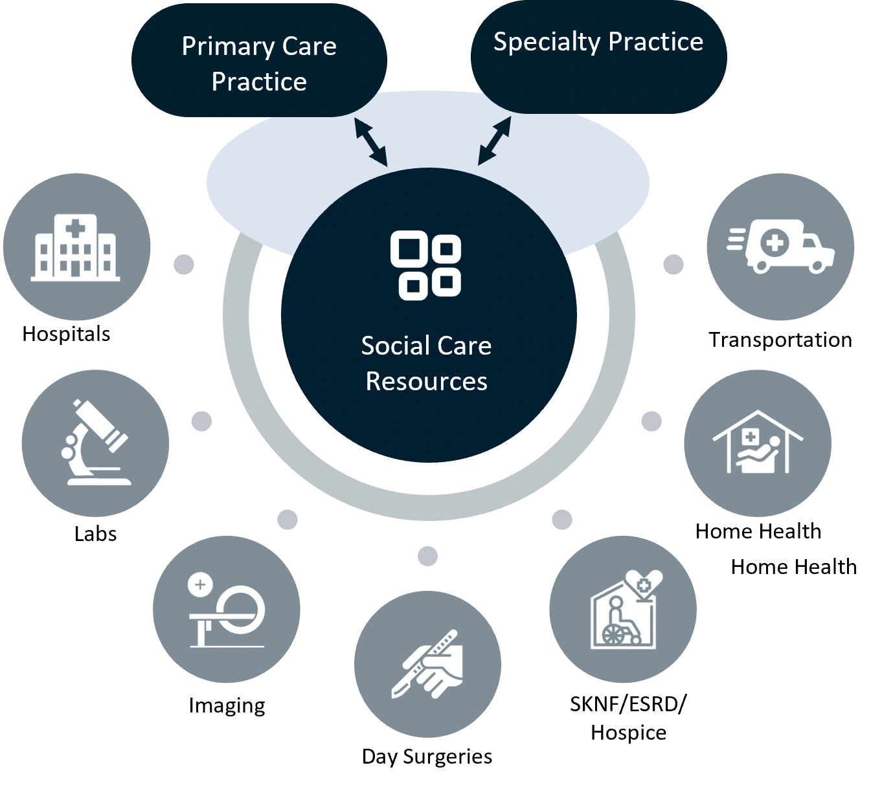
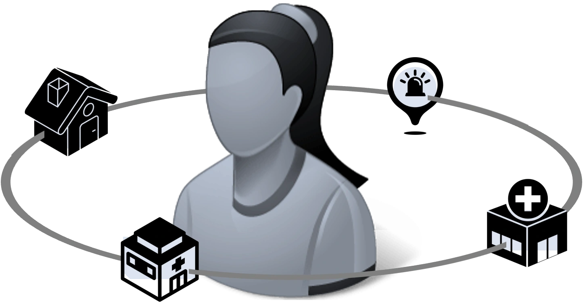
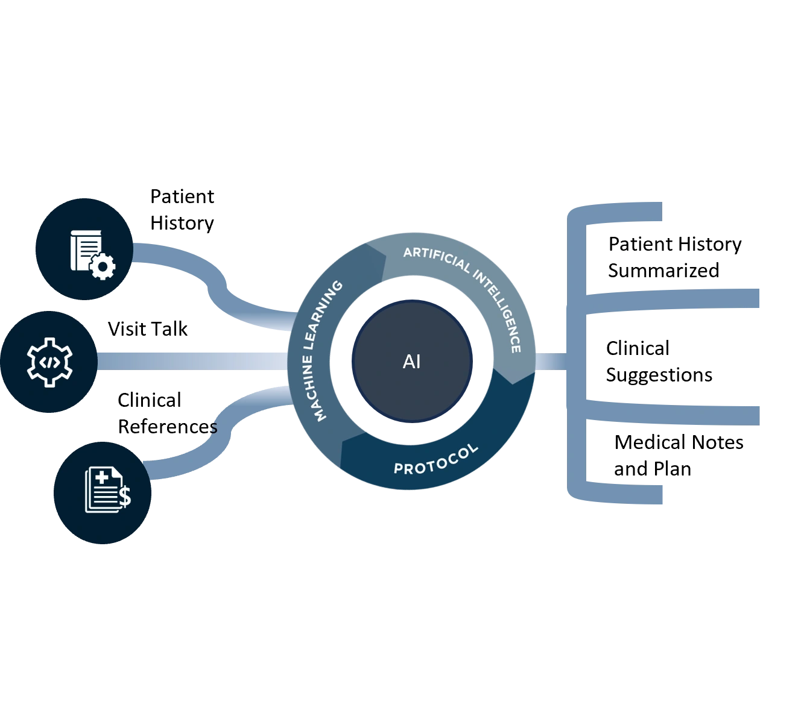
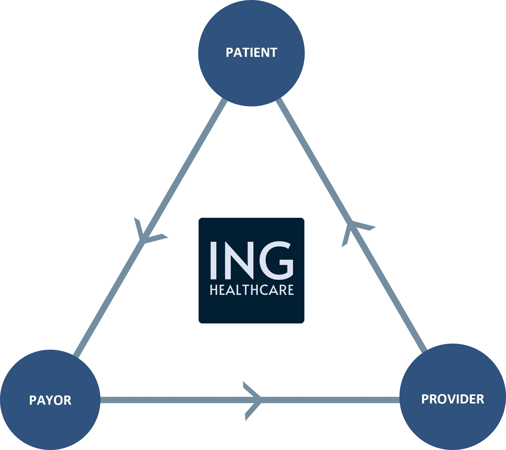
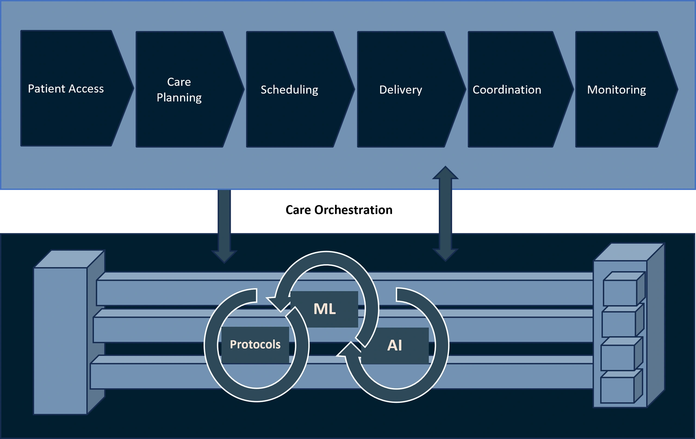
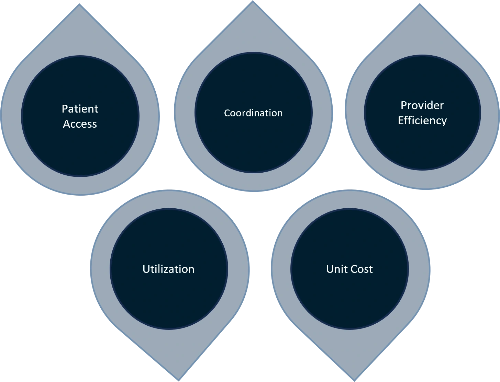

Welcome to Ingenio Care
Building A Digital Health Patient Centric Network to Improve Quality of Care While Reducing Cost by Over 25% and Increasing Provider Income.
Contact UsA Patient Centric Digital Health Network
A Patient Centric Platform to Optimize Healthcare.
Healthcare cost have continued to go up despite all the efforts being made to bend the cost curve. We spend more than two times the next most expensive healthcare system in the world, yet our outcomes and per-capita cost has continued to lag.
In order to address rising cost and improve outcomes, there has been a focus on population health over the last decade. Despite huge investment in patient engagement, education, care-coordination and PCP centric solutions, the efforts have only had a marginal success.
Our approach to address our healthcare challenges is to razor focus on identifying patient who need care and deliver the necessary care with speed and efficiency. Patient Access and closely knit (not siloed) network of providers to respond to patient needs is key to our model.


Solve Patient Access
We have a unique patient access solution.
Our study indicates that the instant access to the right provider is critical to change quality and cost trajectory of our health system. Today's patient access model is highly disintegrated and full of inefficiencies. It takes a long time to get appointments.
Our Patient Access Solution is designed to make access easier and fast by connecting provider and patient in real-time. As our network grows, it will tap into unused capacity across providers by making real-time connection possible - delivering care as soon as the need is identified.
Based on our research, virtual instant physician consult to patient with identified need will have a significant impact on outcome and cost. Virtual real-time access will be impactful in a variety of settings including Home Care, Nursing Homes, SKNF, Emergency Rooms, Primary Care Clinics and Hospitals.
Increase Provider Efficiency and Income
We are reinventing patient provider engagement
We have observed patient/provider interaction and found that providers are spending way too much time sifting through history and inputting data required by administrators, but irrelevant to patient care. Our Ai driven physician assistant sifts through the patient history to bring relevant data to the physicians and creates documentation for them. Physicians gets more time with the same patient or solve for the needs of another patient.
Providers on our network will be able to expand their patient panel, increase their income, and more importantly earn bonuses tied to quality/cost scorecards for each provider regardless of specialty.


Seamless Authorizations/ Utilization Management
Solving pre-auth through collaboration
Prior authorizations not only take physicians away from patient care, resulting delays due to lengthy process can meaningfully impact on outcomes. The industry has continued to struggle with this issue and solutions have had only a limited success.
We intend to bring plans and providers together to share data in-stream and Ai to be the intermediary. If we are successful in getting adoption to our solution, the process will become more efficient, and plans may even provide recommendations to the provider. We believe in aligning the interests of patients, providers and payors to solve pre-auth challenges.
Care Orchestration to Optimize Delivery
Our care orchestration model relies on existing resources
In our innovative healthcare approach to care management, every patient journey begins with a real-time virtual consultation. We anticipate resolving a substantial number of cases through this digital gateway.
Our care orchestration model is built upon care plan developed by the physician responsible to for care. While the PCP is the principal coordinator for wellness and chronic care plans, other conditions require specialists to own the plan and patient recovery.
Our provider network will include high-quality fixed price bundles for high-cost frequent surgeries. These bundles will be surgeon driven as compared to current bundles that are hospital led. Our surgical procedures will utilize highly differentiated processes and tools. As a result, our bundles will be better quality and lower cost than those currently available.
We plan to use pharmacy as key point for care-coordination and medication adherence, in comparison to prevailing programs that deploy ineffective centrally located care-coordinator model. We believe pharmacy centered model will be far more effective and economical.


Quality and Cost of Care
We are striving to transform US healthcare.
We believe our model is forward looking and brings elements of economic, operating and technology models to drive equitable, readily available patient access, higher quality and outcomes. Our approach to utilizing underutilized capacity, efficiency and meaningful incentives has a better chance than other prevailing models.